Nos chats
Ceux qui font la maison
Nos reproductrices actuelles, nos retraités qui vivent toujours avec nous, et tous ceux qui ont construit l’élevage.
Nos reproductrices
Elles vivent avec nous et donnent naissance à nos chatons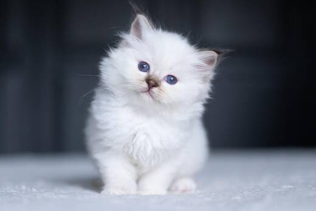
Un Chouïa Craquante Aka Cracotte des Innamorati
Femelle · chocolat tortie tabby point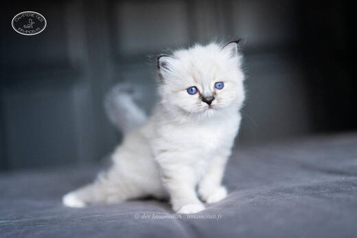
Simone de Beauvoir des Innamorati
Femelle · seal tabby point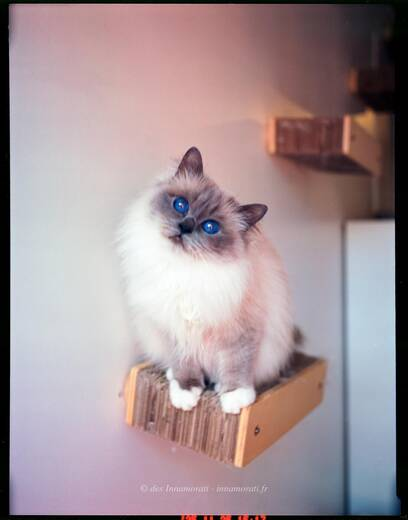
Sanae des Innamorati
Femelle · blue pointNos retraités
Stérilisés, ils profitent de la maison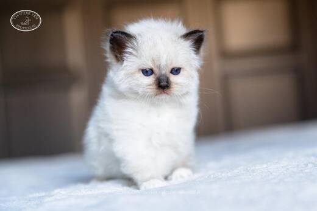
Poker Face des Innamorati
Femelle · seal pointRetraitée, stérilisée, vit à la maison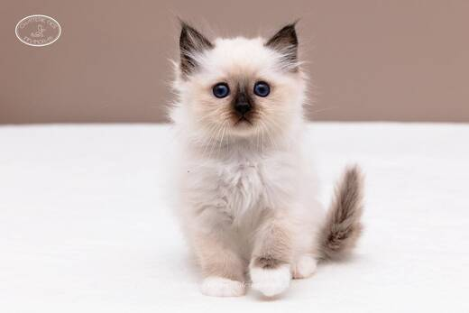
Œdipe des Innamorati
Mâle · seal pointRetraité, stérilisé, vit à la maison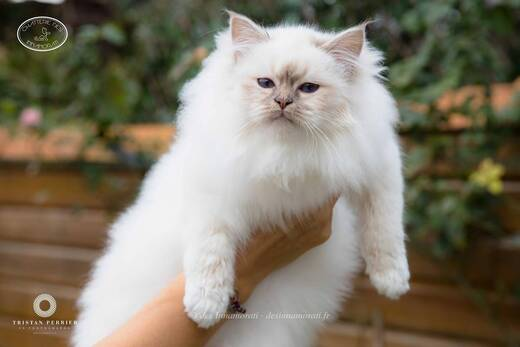
Crowned Dream Lizz
Femelle · lilac tabby pointRetraitée, stérilisée, rejoint bientôt sa famille adoptive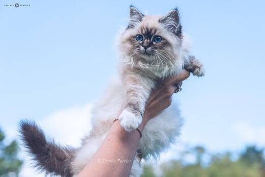
Crowned Dream Kacey
Femelle · seal tabby pointRetraitée, stérilisée, vit à la maisonNos anciennes reproductrices
Retraitées dans des familles aimantes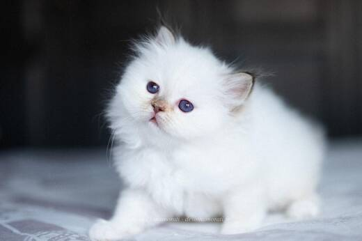
T'as Pas vu Pépette des Innamorati
Femelle · chocolat tortie tabby pointRetraitée en famille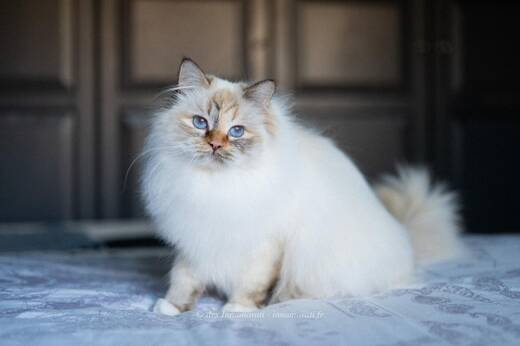
Rey des Innamorati
Femelle · chocolat tortie tabby point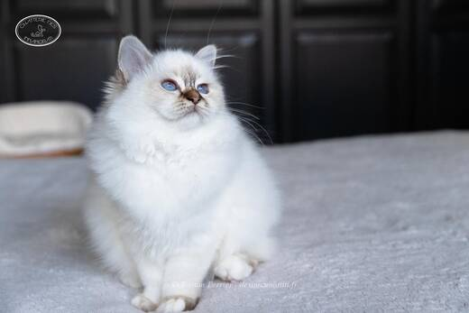
Padmée des Monts de Bohème
Femelle · chocolat tabby pointRetraitée en famille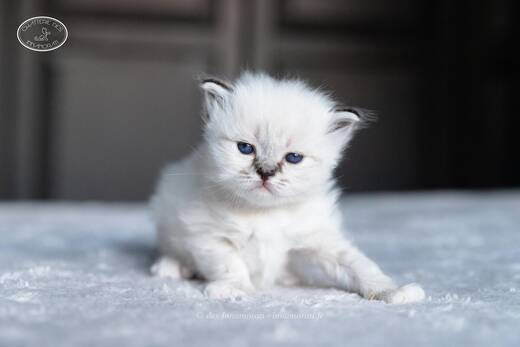
Quintessence des Innamorati
Femelle · seal tabby point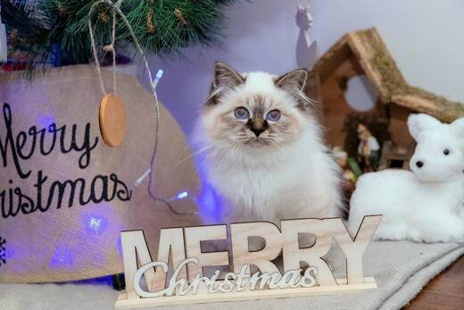
Olyna du Bossuet Perrières
Femelle · seal tabby point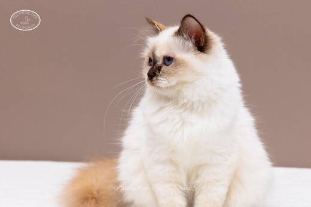
Odyssée du Castel Walou
Femelle · chocolat tortie point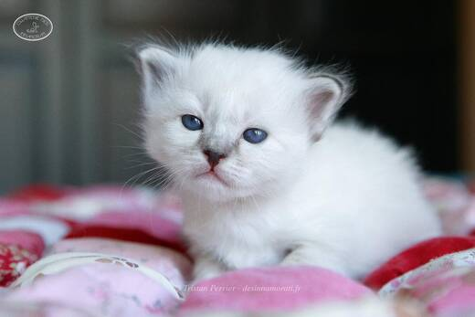
Only The Very Best des Innamorati
Femelle · seal tabby pointRetraitée en famille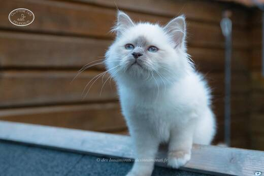
Naïade du Bossuet Perrières
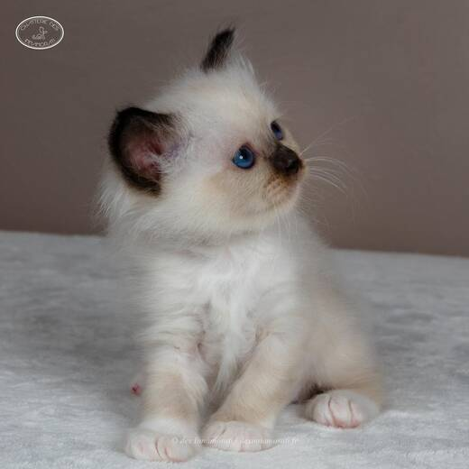
Norma Jean des Innamorati
Femelle · seal point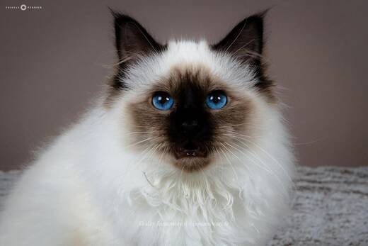
Birmiao Anaïs
Femelle · seal point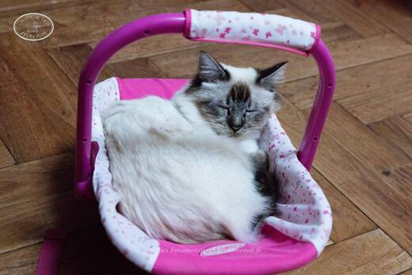
Blue Treasure's Jazzy
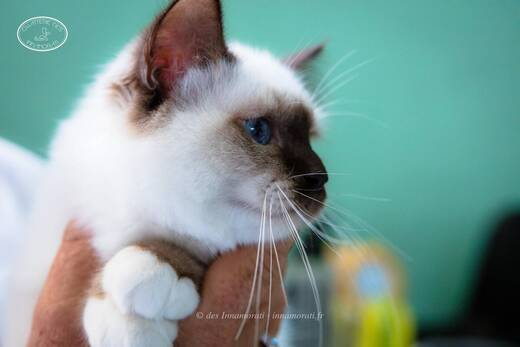
Malicia du Castel Walou
Femelle · chocolat point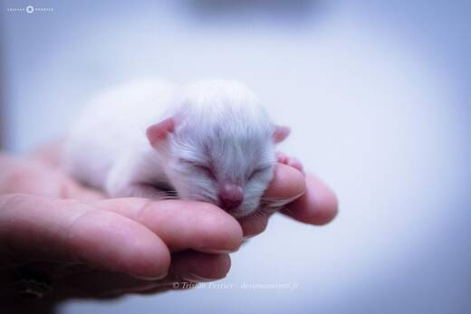
Mia Bella de la Tribu Birmane
Femelle · chocolat tabby pointNos anciens reproducteurs
Les mâles qui ont vécu chez nous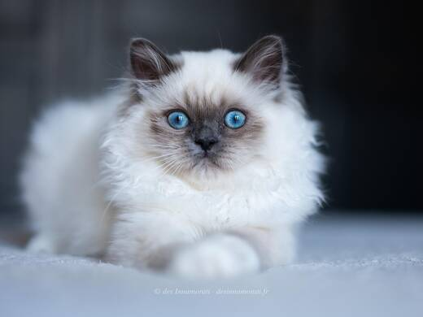
S*Eikefjord’s Sundance Kid
Mâle · blue point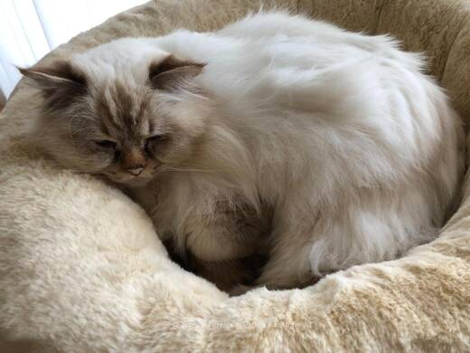
Crowned Dream Ice
Mâle · chocolat tabby point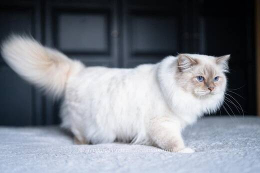
Crowned Dream Quinten
Mâle · lilac tabby point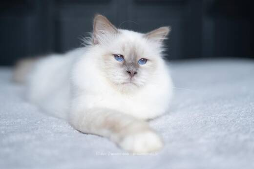
Rush Boom Bang Du Relais Napoléon
Mâle · lilac point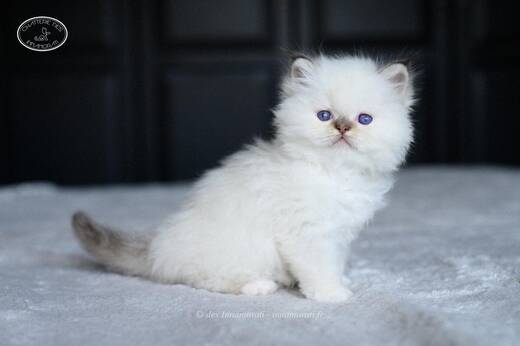
Peppone des Innamorati
Mâle · chocolat tabby point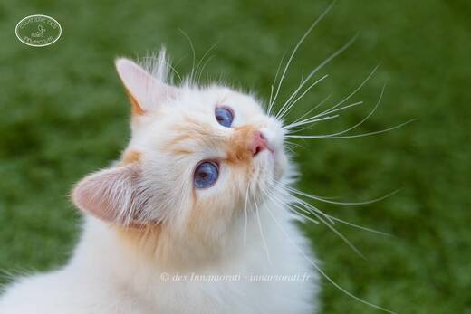
Oasis du Grand Baronnet
Red tabby pointNos chatons ont aussi pour pères les mâles de notre amie Cathy Viltange : Origan de Shweli-Sittang, Bacckara's Bellamy, Umami du Sanctuaire Divin, Taran du Bas de Lock. Crush Boom Bang a aussi été l’un de nos reproducteurs.
Eros, notre premier Birman
Celui par qui tout a commencéEros n’était pas au standard de la race et n’a jamais reproduit. Il a été notre adoré chat de compagnie, et c’est grâce à lui que nous sommes tombés amoureux du Sacré de Birmanie.